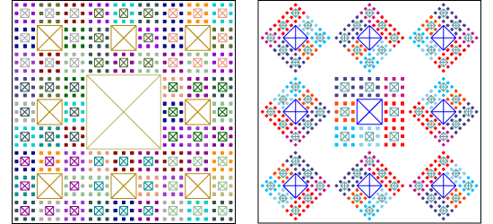

265Draw: Sierpinski Carpets
Application Concepts
- A Sierpinski carpet is a recursive fractal, where smaller copies of a square are drawn around the original square, then smaller squares around the copies, to an arbitrary level of recursion (see image below left).
- Scaling, rotating, and translating actions are applied to surround the finished Sierpinski carpet with copies of itself; a process here called tiling (see image below right).

Recursion Levels
- In this application, recursion levels from 0 to 4 are supported. 0 is no recursion; 4 is the practical upper limit given canvas resolution, file size, and drawing speed.
Tiling Variations
- The tiled carpets can be arranged in different patterns around the original:
carpet, cross, diagonal, rotate.
Colour Themes
primary, secondary, tropical, bold themes are supported with colours chosen randomly within each theme.
Application Usage
sierpinski.sh is the application script which builds the Sierpinski carpets.
The form of the command-line invocation is:
bash sierpinski.sh recursion pattern colour-theme
The application script accepts three parameters:
recursion: an integer chosen from 0 through 4.
pattern: a string defining the tiling pattern required. Tiling is applied after the original carpet is scaled down to fit within the central ninth of the canvas.
carpet creates eight copies of the original carpet around itself, four rotated 180°.cross creates four versions of the original carpet, rotated 45°, on the centers of the canvas sides, plus four un-rotated versions in the corners of the canvas.diagonal will place rotated versions of the original in the corners of the canvas.rotate will rotate all eight copies of the original by odd multiples of 45°. colour-theme: a string defining the colour selections to be used.
primary: Colours with red, blue, or yellow (eg. LightBlue) in their name randomly chosen from css_colours.txt.secondary: Orange-, green-, or purple-like colours (eg. RebeccaPurple) randomly chosen.tropical: Random pink-, teal-, turquoise-, purple-, fuchsia-like colours (eg. DeepPink).bold: Colours with deep or dark in their name (eg. DarkSlateBlue). Two SVG files are created in the same directory as the application:
- A Sierpinski carpet at the recursion level and with the colour theme requested.
- Its file name
carpet_ is suffixed with recursion level. Eg. carpet_3.svg.
- A tiled Sierpinski carpet with pattern and colour theme as requested.
- The suffix of its file name has recursion level and
ST (which stands for scaled and transformed). Eg. carpet_3ST.svg.
Console log (all but first line is output):
==> Home: bash sierpinski.sh 3 carpet bold
*
* Create a Recursive Sierpinski carpet line file with 3 Levels
python generate_carpet.py 3 bold > carpet_3.txt
*
* Create colour svg file from base carpet line file
python lines_to_svg_colour.py < carpet_3.txt > carpet_3.svg
*
* Scale carpet line file down to fit in central ninth of canvas
python rotate_scale_translate.py -f .3333 < carpet_3.txt > carpet_3S.txt
*
* Build tile patterns from scaled line file
python transform_carpet.py carpet < carpet_3S.txt > carpet_3ST.txt
*
* Create colour svg file from tiled carpet line file
python lines_to_svg_colour.py < carpet_3ST.txt > carpet_3ST.svg
Application Source:
css_colours.txt
- Supplied file with 148 css colour names
generate_carpet.py
python generate_carpet.py 2 > carpet_2.txt where the 2 is the recursion level.
lines_to_svg_colour.py
- Supplied python module which translates lines created in
generate_carpet.py and transform_carpet.py into SVG files.
Line_Point_colour.py
- Classes for lines and points, as supplied with assignment.
rotate_scale_translate.py
- Supplied python module which performs transformations on a lines file.
python rotate_scale_translate.py -f .3333 < carpet_2.txt > carpet_2S.txt scales by 1/3.
sierpinksi_carpets.html
- Users’ manual for the application.
sierpinski.sh
- Bash script to exercise code developed to build carpets.
transform_carpet.py
- Based on
rings.py.
- Modifies an existing Sierpinski carpet, by rotating, scaling, translating, and cloning.
python transform_carpet.py cross < carpet_2S.txt > carpet_2ST.txt where cross is a pattern for transformation.
Bugs
- Can have colours on succeeding levels with too close a hue. If so, try again.
References
Last Update: 2017 March 29 at 16:30:20 PDT
|